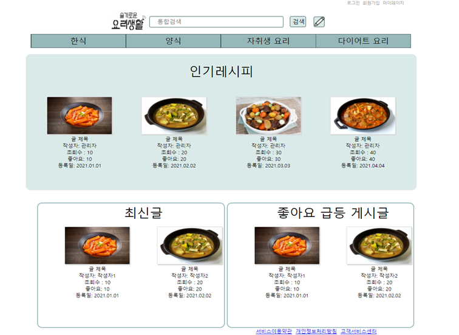

DaeSung
항상 변수를 생각하며
배우는것을 즐거워 합니다.
Backend
Python(Django)
DevOps
Oracle / Maria
Frontend
HTML5 / CSS / JS
About Tools
Git / SourceTree

NET 챌린저 캠프(season5)
은상
프로젝트명 : Spatial Goniometry Cloud Platform
ICT 멘토링 한이음
프로젝트명 : Ant Car

요리레시피
Skill: Oracle DB, jsp, html, css, js
방문자 자동 인식 초인종
Skill: Python(Django), MariaDB, openCV2 (face recognition) , html , css
캘린더
현재 진행중인 프로젝트...
Skill: Python(Django, Summernote, Pyecharts, Folium, Numpy, Matplotlib, Pandas), html, js, css